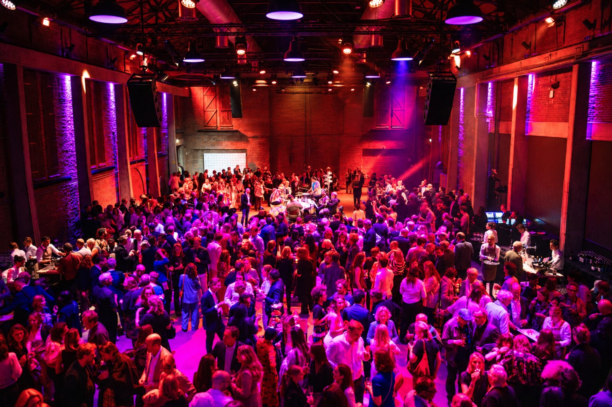

Dance-events: rider-proof dj-gear, krachtig geluid en draadloze lichtshows
DOELGROEPEN

Een dansvloer van 150 tot 1.500 mensen
Een dance event vraagt geluid dat je voelt, de hele avond, zonder dat het pijn doet. Vooraan niet te hard, achterin niet dun, en geen dode zones waar het publiek omheen gaat staan. En de dj moet binnenkomen en meteen kunnen draaien.
Daarom werken we met hybride systemen: de directheid van een kleine installatie en de worp van een grote. Het laag is gelaagd: sub en kick hebben elk hun eigen kast. En de toren is zo gebouwd dat ook het midlaag tot achterin draagt, zodat het daar nog vol klinkt en niet alleen hard.
Wat het geluid moet doen, bepalen we samen met jou. Moet het achterin even hard zijn als voorin, of wil je juist dat mensen naar voren lopen en achterin kunnen praten? Wil je geluid in een specifieke zone, zoals de bar of een nis? Met modulaire systemen is één set speakers inzetbaar in diverse configuraties, afhankelijk van de indeling van de ruimte en het doel van het event. We realiseren dit samen met professionals uit ons netwerk.
De booth in de zaal
Op verzoek zetten we de booth naar voren, de zaal in: een forward booth. De dj staat dan midden in het feest, met publiek rondom. De PA doet de zaal; de booth heeft zijn eigen monitoring met subs, en die zetten we zo neer dat niet alleen de dj er iets aan heeft, maar ook de mensen die eromheen dansen.
Relevante producten en diensten
Benieuwd wat HEAR voor jouw dance event kan doen?
Stel je vraag via WhatsApp→